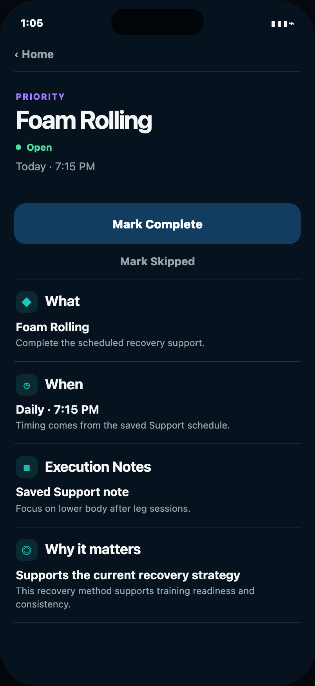
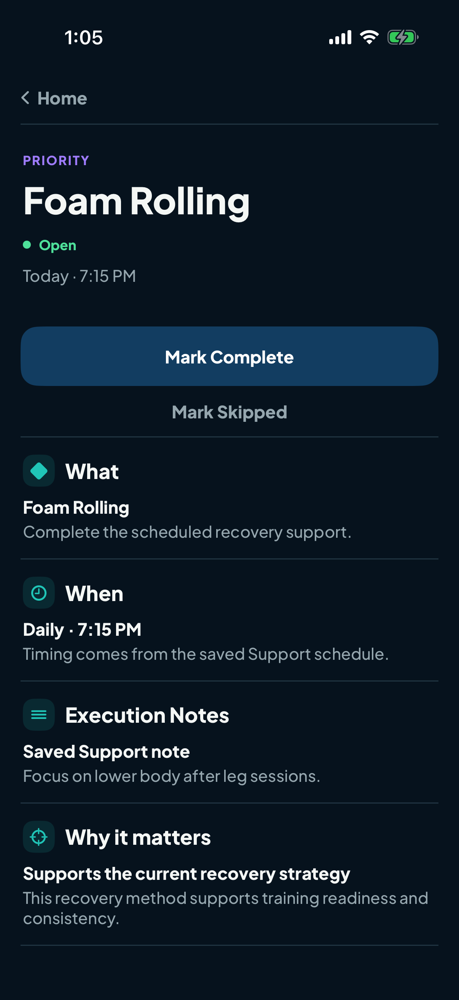
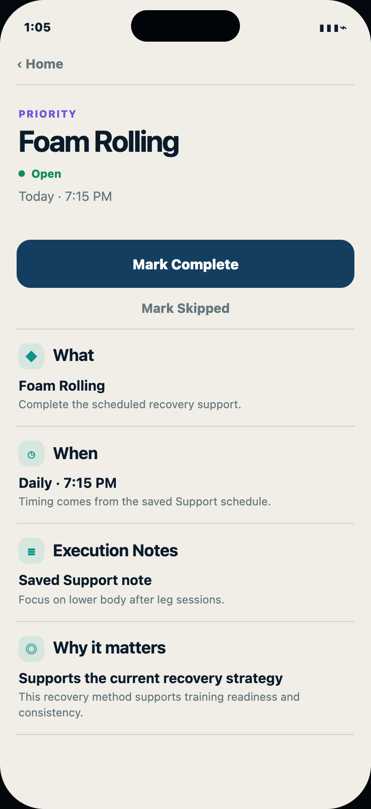
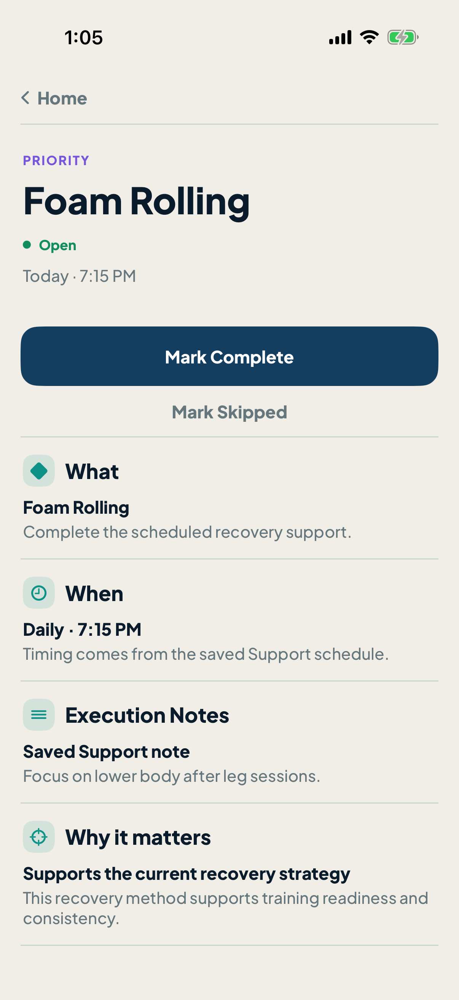

Foam Rolling Priority Detail
First locked-design implementation pilot. Exact accepted reference beside unmodified real Native simulator output at the same 402 × 874 point geometry.
Dark


Mineral Light


Parity result: no unresolved product-surface mismatch. Scope remains Foam Rolling only.